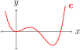

Onderafdeling 1.1.1 Drie verskillende versamelings
Ons begin met 'n speletjie. In wiskunde is 'n versameling \(X\) maar net 'n kolleksie van onderskeibare objekte. Hierdie objekte word elemente van \(X\) genoem.
Ek gaan drie verskillende versamelings aan jou toon en jy moet sê watter eienskappe hulle in gemeen het.
Die eerste versameling, \(A\text{,}\) word gedefinieer as die versameling van alle geordende pare \((x, y)\text{,}\) waar \(x\) en \(y\) reële getalle is.
Kom ons stop hier vir 'n oomblik en vertaal die definisie van Afrikaans na wiskundige simbole. Die vertaling is:
\begin{equation}
A := \{ (a_1,\, a_2) : a_1,a_2 \in \mathbb{R} \} \text{.}\tag{1.1.1}
\end{equation}
Die \(:=\) staan vir ‘is gedefinieer as’. Die \(\{\) en \(\}\) simbole staan vir ‘die versalmeling van alle’. Die enkele dubbelpunt \(:\) staan vir ‘waar’ of ‘sodat’. Die komma tussen \(a\) en \(b\) staan vir ‘en’. Die \(\in\) staan vir `'n element van'. En \(\mathbb{R}\) staan vir die versameling van alle reële getalle. Veels geluk! — jy gebruik die taal van wiskunde!
'n Element van \(A\) is 'n arbitrêre paar van reële getalle \(\ve{a} = (a_1, \, a_2)\text{.}\) Byvoorbeeld, \((1, \, 2) \in A\) en \((3.891, \,
e^\pi)\) is elemente van \(A\text{.}\) Let ook op dat ek 'n vetdruk \(\ve{a}\) gebruik om na 'n element van \(A\) te verwys. Dit is sodat ons \(\ve{a}\) kan onderskei van sy komponente \(a_1\) en \(a_2\text{,}\) wat net gewone getalle is (nie elemente van \(A\) nie).
Ons kan 'n element \(\ve{a}\) van \(A\) visualiseer as 'n punt in die Cartesiese vlak waarvan die \(x\)-koördinaat \(a_1\) en die \(y\)-koördinaat \(a_2\) is:
\(\ve{a} \xmapsto{\text{visualiseer as}} \)
Die tweede versameling, \(B\text{,}\) word gedefinieer as die versameling van alle geordende reële drietalle \((u_1, \, u_2, \, u_3)\text{,}\) wat \(u_1 - u_2 + u_3
= 0\) bevredig. In wiskundige simbole is dit soos volg:
\begin{equation}
B := \{ (b_1, \, b_2, \, b_3) : b_1, b_2, b_3 \in \mathbb{R} \mbox{ en }
b_1 - b_2 + b_3 = 0\} \text{.}\tag{1.1.2}
\end{equation}
Byvoorbeeld, \((2,3, 1) \in B\text{,}\) maar \((1,1,1) \notin B\text{.}\) Ons kan 'n element \(\ve{b}\) van \(B\) visualiseer as 'n punt in die vlak in 3-dimensionele ruimte wat deur die vergelyking \(x-y+z = 0\) daargestel word:
\(\ve{b} \xmapsto{\text{visualiseer as}} \)
Die derde versameling, \(C\text{,}\) is die versameling van alle vierdegraadse polinome. Omgesit in wiskundige simbole, ,
\begin{equation}
C := \{ \mbox{polinome met graad \(\leq 4\)} \}\text{.}\tag{1.1.3}
\end{equation}
Onthou dat die graad van 'n polinoom is die grootse mag van \(x\) wat daarin verskyn. Byvoorbeeld, \(\ve{c} = x^4 - 3 x^3 + 2x^2\) is 'n vierdegraadse polinoom; so ook is \(\ve{p} = 2x^3 + \pi x\text{.}\) So \(\ve{c}\) en \(\ve{p}\) is elemente van \(C\text{.}\) Maar \(\ve{r} = 8x^5 - 7\) en \(\ve{s} =
\sin(x)\) is nie elemente van \(C\) nie. Ons kan 'n element \(\ve{c} \in C\) (i.e. 'n vierdegraadse polinoom) met sy grafiek visualiseer. Byvoorbeeld, die polinoom \(\ve{c} = x^4 - 3x^3 + 2x^2 \in C\) word soos volg visualiseer:
\(\ve{c} \xmapsto{\text{visualiseer as}} \)

Daar het jy dit. Ek het drie versamelings definieer: \(A\text{,}\) \(B\) en \(C\text{,}\) en ek het verduidelik hoe elkeen visualiseer kan word. Die drie versamelings lyk aanvanklik redelik verskillend. Elemente van \(A\) is arbitrêre punte in \(\mathbb{R}^2\text{.}\) Elemente van \(B\) is punte in \(\mathbb{R}^3\) wat 'n sekere vergelyking bevredig. Elemente van \(C\) is almal polinome.
Watter kenmerke het hierdie versamelings in gemeen?
Onderafdeling 1.1.2 Gedeelde kenmerke van die versamelings
Ek wil fokus op twee kenmerke wat versamelings in \(A\text{,}\) \(B\) en \(C\) in gemeen het.
Onderonderafdeling 1.1.2.1 Sommering
Eerstens het aldrie hierdie versamelings 'n natuurlike sommeringsbewerking. Ons kan twee elemente in 'n versameling bymekaar tel om 'n derde element in dieselfde versameling te kry.
In Versameling \(A\) kan ons twee elmente \(\ve{a} = (a_1, \, a_2)\) en \(\ve{a}'= (a_1', \, a_2')\) bymekaar tel deur hulle onderskeie komponente bymekaar te tel om 'n nuwe element \(\ve{a} + \ve{a}' \in A\) te vorm:
\begin{equation}
\underbrace{(a_1, \, a_2)}_{\ve{a}} + \underbrace{(a'_1, \,a'_2)}_{\ve{a}'}
:= \underbrace{(a_1 + a_1', \, a_2 + a_2')}_{\ve{a} + \ve{a}'}\label{add_in_A}\tag{1.1.4}
\end{equation}
Byvoorbeeld, \((1, \,3) + (2, \,-1.6) = (3, \,1.4)\text{.}\) Ons kan die sommeringsbewerking soos volg visualiseer:
Ons kan 'n soortgelyke benadering in versameling \(B\) volg. Versonderstel ons het twee elemente van \(B\text{,}\) \(\ve{b} = (b_1, \,b_2, \,b_3)\) en \(\ve{b}'
= (b_1', \, b_2', \, b_3')\text{.}\) Let daarop dat, omdat \(\ve{b}\in B\text{,}\) bevredig \(\ve{b}\) se komponente die vergelyking \(b_1 - b_2 + b_3 = 0\text{.}\) So bevredig \(b'\) ook \(b'_1 - b'_2 + b'_3 = 0\text{.}\) Ons kan \(\ve{b}\) en \(\ve{b}'\) saamtel om 'n nuwe element \(\ve{b} + \ve{b}'\) van \(B\) te kry, deur hulle komponente saam te tel soos tevore:
\begin{equation}
\underbrace{(b_1, \, b_2, \, b_3)}_{\ve{b}} + \underbrace{(b'_1, \,b'_2, \,
b'_3)}_{\ve{b}'} := \underbrace{(b_1 + b_1', \, b_2 + b_2', \, b_3 +
b'_3)}_{\ve{b} + \ve{b}'}\label{new_add_in_B}\tag{1.1.5}
\end{equation}
Nou moet ons versigtig wees. Hoe weet ons dat die uitdrukking aan die regterkant regtig 'n element van \(B\) is? Ons moet seker maak dat dit die vergelyking ‘die eerste komponent minus die tweede komponent plus die derde komponent is gelyk aan nul’ bevredig. Kom ons doen dit formeel:
\begin{align*}
(\ve{b} + \ve{b}')_1 - (\ve{b}+\ve{b}')_2 + (\ve{b}+\ve{b}')_3 \amp = (b_1
+ b'_1) - (b_2 + b'_2) + (b_3 + b'_3)\\
.
\amp = (b_1 - b_2 + b_3) + (b'_1 - b'_2 + b'_3)\\
\amp = 0 + 0\\
\amp = 0\text{.}
\end{align*}
\(B\) kan op die selfde manier as \(A\) visualiseer word.
Daar is ook 'n sommeringsbewerking in die versameling \(C\text{.}\) Ons kan twee polinome algebraïes bymekaartel deur hulle ooreenstemmende koëffisiënte bymekaar te tel:
\begin{gather}
[c_4 x^4 + c_3 x^3 + c_2 x^2 + c_1 x^1 + c_0] + [d_4 x^4 + d_3 x^3 + d_2 x^2 + d_1 x^1 + d_0]\notag\\
:= (c_4 + d_4) x^4 + (c_3 + d_3) x^3 + (c_2 + d_2) x^2 + (c_1 + d_1) x^1 + (c_0 + d_0)\label{add_in_C}\tag{1.1.6}
\end{gather}
Byvoorbeeld,
\begin{equation*}
[2x^4 + x^2 - 3x + 2] + [2x^3 - 7x^2 + x]
= 2x^4 + 2x^3 - 6x^2 -2x + 2\text{.}
\end{equation*}
Daar is nog 'n manier om aan die sommering van polinome te dink. Elke polinoom \(\ve{c}\) kan gesien word as 'n funksie, in die sin dat ons 'n arbitrêre waarde \(x\) in die polinoom \(\ve{c}\) in kan vervang, en dit sal 'n waarde \(\ve{c}(x)\) voortbring. Byvoorbeeld, as \(\ve{c}(x) = 3x^2 -
1\text{,}\) dan is \(\ve{c}(2) = 11\text{.}\) As ons polinome as funksies beskou, dan kan aan die som \(\ve{c} + \ve{d}\) van twee polinome gedink word as 'n nuwe funksie wat, wanneer 'n getal \(x\) invervang word, dit die waarde \(\ve{c}(x) + \ve{d}(x)\) teruggee. Wiskundig geskryf,
\begin{equation}
(\ve{c} + \ve{d})(x) := \ve{c}(x) + \ve{d}(x)\label{add_in_C2}\tag{1.1.7}
\end{equation}
Deur so te dink, kan ons die grafiek van \(\ve{c} + \ve{d}\) as die som van die grafieke van \(\ve{c}\) en \(\ve{d}\) voorstel:
Onderonderafdeling 1.1.2.2 Nul-element
In aldrie versamelings \(A\text{,}\) \(B\) en \(C\text{,}\) bestaan daar 'n spesifieke element (die nul-element) \(\ve{0}\) wat, as dit by 'n ander element getel word, lewer dit weer dieselfde element onveranderd terug.
In \(A\) word die nul-element \(\ve{0}\) definieer deur
\begin{equation}
\ve{0} := (0,0) \in A\text{.}\label{zero_in_A}\tag{1.1.8}
\end{equation}
Wanneer jy hierdie punt by 'n ander punt \((a_1, \, a_2) \in A\) tel, gebeur niks nie!
\begin{equation*}
(0, \,0) + (a_1, \, a_2) = (a_1, \, a_2)\text{.}
\end{equation*}
Moenie die nul-element \(\ve{0} \in A\) met die reële getal nul (\(0 \in
\mathbb{R}\)) verwar nie. Dit is nog 'n rede hoekom ek vetdruk gebruik! (Jy moet elemente van \(A\) onderstreep om die onderskeid te tref.)
\((0,0,0) \in B\) is die nul-element \(\ve{0}\) in \(B\text{.}\) As jy dit by 'n ander punt \((u_1, u_2, u_3) \in B\) tel, gebeur niks nie!
\begin{equation*}
(0, \, 0, \, 0) + (u_1, \, u_2, \, u_3) = (u_1, \, u_2, \, u_3)\text{.}
\end{equation*}
In \(C\) is die nul-polinoom die nul-element \(\ve{0}\text{.}\) Algebraïes is dit die vierdegraadse polinoom waarvan die koëffisiënte almal nul is:
\begin{equation}
\ve{0} = 0 x^4 + 0 x^3 + 0 x^2 + 0 x + 0\label{zero_in_C}\tag{1.1.9}
\end{equation}
As ons aan die polinoom as 'n funksie dink, dan is die nul-polinoom \(\ve{0}\) die funksie wat vir alle waardes van \(x\) nul is, i.e. \(\ve{0} (x)
= 0\) vir alle \(x\text{.}\) Hoe ons ookal daaraan dink, as ons die nul-polinoom by 'n ander polinoom tel, gebeur niks nie!
\begin{gather*}
[0 x^4 + 0 x^3 + 0 x^2 + 0 x + 0] + [c_4 x^4 + c_3 x^3 + c_2 x^2 + c_1 x + c_0] \\
= [c_4 x^4 + c_3 x^3 + c_2 x^2 + c_1 x + c_0]
\end{gather*}
Onderonderafdeling 1.1.2.3 Skalaarvermenigvuldiging
Die laaste kenmerk wat \(A\text{,}\) \(B\) en \(C\) in gemeen het is dat met elke versameling, hul elemente met reële getalle vermenigvuldig kan word en steeds in die versameling sal wees.
Byvoorbeeld, as \(\ve{a} = (a_1, a_2)\) 'n elment van \(A\) is, dan kan ons dit met 'n arbitrêre reële getal, sê maar \(9\text{,}\) vermenigvuldig, om 'n nuwe element \(9\cdot a\) van \(A\) te kry. Hierdie vermenigvuldiging word komponentgewys gedoen:
\begin{equation}
9 \cdot (a_1, \,a_2) := (9 a_1, \, 9a_2)\text{.}\label{sm_in_A}\tag{1.1.10}
\end{equation}
In die algemeen, as \(k \in \mathbb{R}\) 'n arbitrêre reële getal is, dan kan ons 'n arbitrêre element \(\ve{a} \in A\) met \(k\) vermenigvuldig om 'n nuwe element \(k \cdot \ve{a} \in A\) te kry deur elke komponent van \(\ve{a}\) met \(k\) te vermenigvuldig:
\begin{equation*}
\underbrace{k.(a_1, \, a_2)}_{\text{ Skalaarvermenigvuldiging} } := (\underbrace{k a_1}_{\text{Vermenigvuldig twee getalle} }, \, \underbrace{k a_2})
\end{equation*}
Wees versigtig om te onderskei tussen skalaarvermenigvuldiging \(k \cdot
\ve{a}\) (aangedui met \(\cdot\)) en gewone vermenigvuldiging van reële getalle \(k a_1\) (aangedui sonder enige simbool, die twee simbole word bloot langs mekaar geplaas). Later gaan ons 'n kortpad neem en ophou om die \(\cdot\) eksplisiet uit te skryf — wees gewaarsku!
Visueel skaleer die vermenigvuldigingsbewerking \(\ve{a}\) met 'n faktor van \(k\text{.}\) Dit is hoekom ons dit skalaarvermenigvuldiging noem.
Daar is 'n soortgelyke skalaarvermenigvuldigingsbewerking in \(B\text{:}\)
\begin{equation}
k (u_1, \, u_2, \, u_3) := (k u_1, \, k u_2, \, k u_3)\label{sm_in_B}\tag{1.1.11}
\end{equation}
Daar is ook 'n skalaarvermenigvuldigingsbewerking in \(C\text{.}\) Ons vermenigvuldig elke koëffisient van 'n polinoom \(\ve{c} \in C\) met \(k\text{:}\)
\begin{equation}
k \cdot [c_4 x^4 + c_3 x^3 + c_2 x^2 + c_1 x + c_0] = k c_0 x^4 + k c_3 x^3
+ k c_2 x^2 + k c_1 x + k c_0\label{sm_in_C}\tag{1.1.12}
\end{equation}
As ons aan 'n polinoom \(\ve{c}\) as 'n funksie dink, dan korrespondeer dit met vertikale skalering van die grafiek met 'n faktor van \(k\text{.}\)
Onderafdeling 1.1.4 Reëls
Ons het gevind dat elk van ons drie versamelings \(A\text{,}\) \(B\) en \(C\) 'n sommeringsbewerking \(+\text{,}\) 'n nul-element \(\ve{0}\) en 'n skalaarvermenigvuldigingsbewerking \(\cdot\) het. Kan ons enige reëls identifiseer waaraan hierdie bewerkings in al drie versamelings moet voldoen?
Byvoorbeeld, ons kan aan die sommeringsbewerking in \(A\) dink as 'n funksie wat aan elke elementpaar \(\ve{a}\) en \(\ve{a}'\) in \(A\) 'n nuwe element \(\ve{a} + \ve{a}'\) in \(A\) toeken. Voldoen hierdie bewerking aan enige reëls?
Kom ons kyk. Laat \(\ve{a} = (a_1, \,a_2)\) en \(\ve{a}' = (a'_1, \, a'_2)\) elemente van \(A\) wees. Ons kan hulle in twee verskillende volgordes bymekaar tel,
\begin{equation*}
\ve{a} + \ve{a}' = (a_1 + a'_1, \, a_2 + a'_2)
\end{equation*}
en
\begin{equation*}
\ve{a}' + \ve{a} = (a'_1 + a_1, \, a'_2 + a_2)\text{.}
\end{equation*}
Kom dit op dieselfde neer? In ander woorde, geld
\begin{equation}
\ve{a} + \ve{a}' = \ve{a}' + \ve{a}\label{comm_in_A}\tag{1.1.13}
\end{equation}
as 'n reël? Die antwoord is ja, maar hoekom? Om na te gaan of twee elemente van \(A\) dieselfde is, moet ons nagaan of elkeen van hulle komponente gelyk is. Die eerste komponent van \(\ve{a} + \ve{a}'\) is \(a_1 +
a'_1\text{.}\) Die eerste komponent van \(\ve{a}' + \ve{a}\) is \(a'_1 + a_1\text{.}\) Is \(a_1 + a'_1 = a'_1 + a_1\text{?}\) Ja — want beide is net gewone reële getalle (nie elemente van \(A\) nie), en ons weet dat vir gewone reële getalle kan jy in enige orde saamtel met dieselfde resultaat. So die eerste komponent van \(\ve{a} + \ve{a}'\) is gelyk aan die eerste komponent van \(a' + a\text{.}\) Net so kan ons nagaan dat die tweede komponent van \(\ve{a} +
\ve{a}'\) gelyk is aan die tweede komponent van \(\ve{a}' + \ve{a}\text{.}\) So all die komponente van \(\ve{a} + \ve{a}'\) is gelyk aan al die ooreenstemmende komponente van \(\ve{a}' + \ve{a}\text{.}\) So, uiteindelik kan ons tot die gevolgtrekking kom dat \(\ve{a} + \ve{a}' = \ve{a}' + \ve{a}\text{.}\)
Geld hierdie reël (1.1.13) ook vir sommeringsoperators in \(B\) en \(C\text{?}\) Ja. Byvoorbeeld, kom ons gaan na dat dit vir \(C\) geld. Veronderstel dat \(\ve{c}\) en \(\ve{c}'\) polinome in \(C\) is. Geld die reël
\begin{equation}
\ve{c} + \ve{c}' = \ve{c}' + \ve{c}\label{must_check}\tag{1.1.14}
\end{equation}
steeds?
Die linker- en regterkante van (1.1.14) is elemente van \(C\text{.}\) En alle elemente van \(C\) is polinome. Om na te gaan of twee polinome gelyk is, moet ons nagaan of hulle gelyk is as funksies, met ander woorde, of jy identiese resultate uitkry vir enige moontlike insetwaarde van \(x\) wat invervang word.
By 'n arbitrêre insetwaarde \(x\) is die linkerkant \((\ve{c} +
\ve{c}')(x) = \ve{c}(x) + \ve{c}'(x)\text{.}\) Aan die anderkant is die regterkant \((\ve{c}' + \ve{c})(x) = \ve{c}'(x) + \ve{c}(x)\text{.}\) Nou, let op dat \(\ve{c}(x)\) en \(\ve{c}'(x)\) gewone getalle is (en nie polinome nie). So \(\ve{c}(x) + \ve{c}'(x) = \ve{c}'(x) + \ve{c}(x)\text{,}\) want dit is waar vir gewone getalle. So vir elke insetwaarde \(x\text{,}\) \((\ve{c} + \ve{c}') (x) =
(\ve{c}' + \ve{c})(x)\text{.}\) Daarom is die polinome \(\ve{c}+\ve{c}'\) en \(\ve{c}' + \ve{c}\) gelyk, hulle uitsetwaarde is dieselfde vir alle getalle \(x\text{.}\)
Daar is ander reëls wat ook vir al drie versamelings geld. Byvoorbeeld, in al drie versamelings geld die reël
\begin{equation}
(\ve{x} + \ve{y}) + \ve{z} = \ve{x} + (\ve{y} + \ve{z})\tag{1.1.15}
\end{equation}
vir alle elemente \(\ve{x}\text{,}\) \(\ve{y}\) en \(\ve{z}\text{.}\) Kan jy ander reëls identifiseer wat vir al drie versamelings geld?